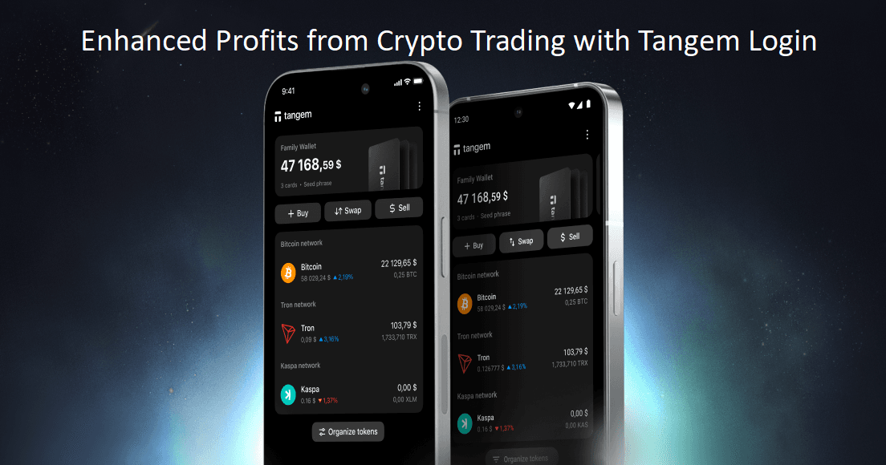

Whether you’re a seasoned crypto trader or just a beginner exploring the world of crypto, Tangem is a platform that has something to offer to all. The platform is a powerful one and allows seamless storing, managing, and transferring of digital assets with enhanced security. If you want a smooth access to your Tangem account, you must complete the Tangem Login process first. The Tangem ecosystem offers all its user’s complete control over their funds and ensures enterprise-grade security as well. The platform offers a user-friendly Tangem Wallet App and also has a robust and advanced hardware technology as well.
jhjhhjhjhj
When you’re looking to access your Tangem account, the process employes is pretty straightforward. Let’s understand the key steps involved in the same.
The unique and powerful features of Tangem, gives it a unique edge over others. After completing Tangem Login, you get access to a range of different features:
Convenience and performance are the key aspects that the Tangem Wallet App is known for. You can check balances, manage assets, and even track real-time market prices all under one roof with Tangem. The app has a simple interface and uses robust security protocols, ensuring complete beginner-friendliness.
Users can manage digital assets seamlessly with the platform. Trading, staking, and token swaps are also simplified, as the platform ensures seamless integration with a range of dApps. The ecosystem is designed with comprehensive security, and offers a range of different benefits to the users in the long run. As a user, you are able to complete a wide range of functions with the app.
Quick and secure funds transfer is made simple with Tangem Login. After completing login, simply open the app and select the cryptocurrency you want to send. Then you need to tap your card for verification, and enter the wallet address of the recipient and confirm. Once the transaction is confirmed, it takes minimum time to process and complete. Besides, the platform makes sure that with its cold storage technology, your private keys are protected appropriately. This is an important aspect that helps in securing transactions and offers users complete peace of mind.
Cutting-edge security and unmatched convenience are seamlessly blended together in Tangem, making it a standout choice for traders. The use of the Tangem Login process and leveraging the Tangem Wallet App, you can enjoy smooth and seamless fund transfers, effortless dApps connections, and complete control over assets. The core of the wallet is security, as it ensures additional layers of security for its users, while not compromising on the convenience aspect.